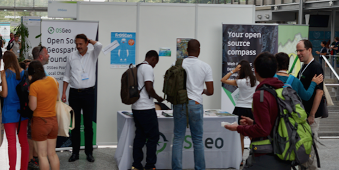
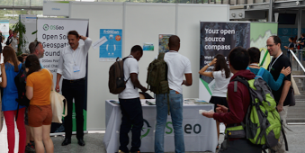
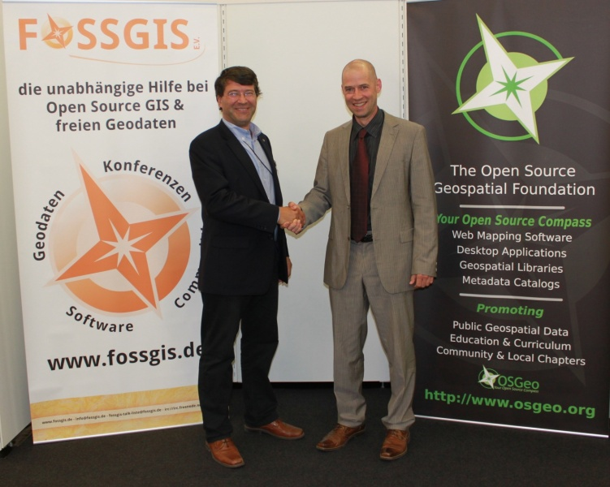
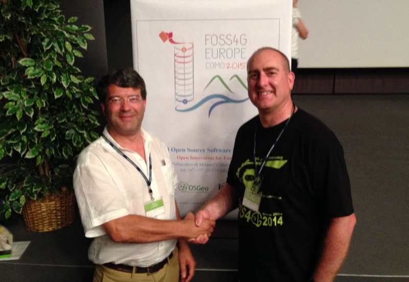
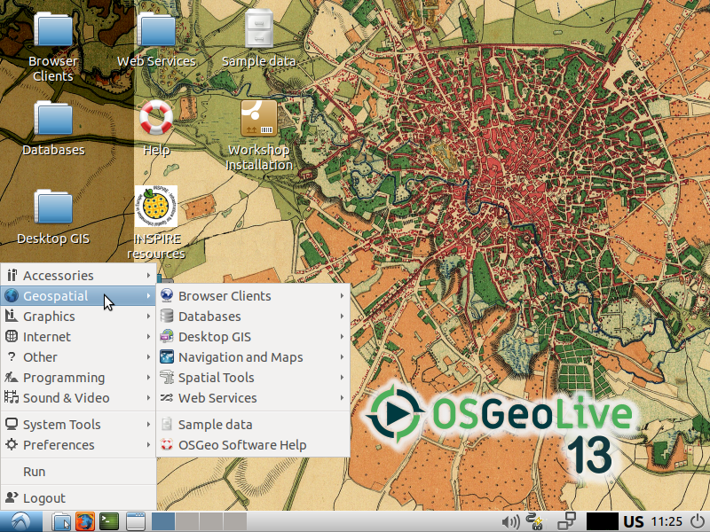

Get to know OSGeo and how OSGeo is connected to OpenStreetMap
Open Source Software and Open Education making use of OpenStreetMap data
Astrid Emde (OSGeo Board from Cologne Germany)

Open Source Geospatial Foundation
Free, Open, Self-organizing, Global
What is OSGeo
- OSGeo is a not-for-profit software foundation
providing organizational, legal, and financial support for projects
- OSGeo is volunteer driven
Passionate membership of individuals from around the world.
- OSGeo promotes adoption of open geospatial technology
Partnerships on open approach to software, standards, data and education.
OSGeo history
- Established in 2006 at a meeting in Chicago, IL with financial support from AutoDesk
- Note: OSM was there already since 2004
- Driven by need to organize and navigate rapidly growing field of open source geospatial projects
- Founding members: leading open source geospatial projects - GDAL, MapServer, QGIS, GRASS GIS, PostGIS

Supporting Open Source
Software development
OSGeo projects
Projects are the OSGeo core focus
25 graduated through a rigorous incubation:
- Web Mapping: deegree, Geomajas, GeoMoose, GeoServer, Mapbender, mapfish, MapServer,
MapGuide Open Source*, OpenLayers, PyWPS
- Desktop: GRASS GIS, gvSIG Desktop, Marble, QGIS Desktop
- Libraries: GDAL/OGR, GEOS, GeoTools, Orfeo ToolBox
- Spatial Database, metadata catalogs, other: GeoNetwork, GeoNode, OSGeoLive, PostGIS, pycsw
OSGeo projects
20 Community projects, 6 are in incubation (*)
- Libraries: actinia, Pronto Raster, Proj*, FDO, Pronto Raster, OSSIM, pgRouting
- Web Mapping: istSOS*, ZOO-project*, Oskari*, GeoWebCache, GC2/Vidi
- Desktop: OSGeo4W, Opticks*
- Other: GeoServer Client PHP, MetaCRS*, Loader, GeoHealthCheck, Portable GIS, TEAM Engine*
OSGeo Projects love OSM Data
GDAL OSM Support
OpenLayers / Leaflet OSM Support
OSM based Services as Basemap f.e Mapbender
pgRouting on OSM data
OSM User love OSGeo Projects
QGIS visualisation & import & lot of possibilities & plugins
a variety of Software for different needs
OSGeo Annual General Meeting
AGM every year at FOSS4G
OSGeo Board
9 elected board members
OSGeo membership
Open, free membership- 5600+ members registered on the wiki
- 940 registrations on the website 08/2019
- 33700+ OSGeo mailman server unique subscribers 08/2019
- 425 elected charter members - developers, activists, advocates (2018)
- charter members elect the board of directors
- Note: 5.3 million OSM registrations (2019-06-07 OSM Stats)
Local chapters
- 30 + local chapters all over the world
- organize meetups, conferences, code sprints
- report at Annual General Meeting at Global FOSS4G
- manage translations of documentation


Local chapters
are they connected to OSM?
Local chapter FOSSGIS e.V.
German language local Chapter for OSGeo
Official Local Chapter of OSMF for Germany
- 200+ members
- FOSSGIS & OSM good combination
- maybe different interests

other OSGeo Local chapters
OSGeo & OSM good combination
- Argentinia
- Oceania
- Italy
- ...
Conferences: Global
Annual global FOSS4G conference travels around the world

FOSS4G 2019 Bucharest
amazing event with over 1000 participants
FOSS4G covers OSGeo and OSM
focus on FOSS4G - Free open Source Software for Geospatial
meet the developer
talks about new feature in software xy
talks about use cases
... often solutions with OSM
... regional events are often combinations of OSGeo and OSM
FOSS4G
dancing - singing - musical - pub race
Conferences: regional
Organized by local chapters, rapidly growing
many regional FOSS4G conferences per year
Community sprints
- OSGeo budget supports code and community sprints
- Collaborative sprints with multiple projects
- Community sprints associated with FOSS4G conferences
- Code sprints organzied by projects

Community sprint at Linuxhotel by FOSSGIS e.V.
Community sprint at FOSS4G 2018 Dar es Salaam (Tanzania)
Community sprint at FOSS4G 2018 Dar es Salaam (Tanzania)
Google Summer of Code
https://summerofcode.withgoogle.com
- OSGeo serves as umbrella organization for projects
- Smaller open source geospatial projects can also join
- 12 years, 150+ students ($750,000 +) , 7 students in 2019
- mentors work for free, get to visit Google headquarters

Google_Code-in
https://codein.withgoogle.com/archive/
- OSGeo serves as umbrella organization for project participation in Google code-in
- Fostering pre-university student participation in OSGeo
- 2 years, 649 small tasks for 11 OSGeo projects
Google Season of Docs-in
Sessions at major conferences
- Participation at major scientific and technology conferences
- Open geospatial sessions, workshops, townhalls
- ISPRS, ICC, AGU, EGU, ...
- MoUs with several organizations
 


Beyond software
OSGeo works with partners to support and promote
- Open Source: collaborative software development.
- Open Data: free access to geospatial data
- Open Standards: avoid lock-in, use interoperable software
- Open Education: learning and teaching without barriers
- Open Science: Share data, software, publications
- MoUs with 14+ organizations
How it started
Founded in 2011: MoU between OSGeo and the International Cartographic Association (ICA) 
Georg Gartner and Arnulf Christl, renewal in 2015 with Jeff McKenna
More MoUs
International Society for Photogrammetry and Remote Sensing (ISPRS) signed in 2014.
University Consortium for GIScience (UCGIS) signed in 2016
Association of Geographic Information Laboratories in Europe (AGILE) signed in 2017
 Open Geospatial Consortium
Open Geospatial Consortium


YouthMappers (signed in 2018)
US DoI, OGC, LH Corp, IGU, STP India, TIB, GLTN, UNIGIS
So why not an OSGeo OSM MoU?
people from OSGeo and OSMF talked
- OSM met with OSGeo at the LinuxTag 2006 and the following years
- No MoU singed as OSM does not do that
- we are friends already
- no need for a MoU
- new Category: Like Minded Organizations
GeoForAll
OSGeo educational initiative
Global network of academic research and education laboratories and government/industry partners

Mission and goals
Making geospatial education and opportunities accessible to all
- Create research and teaching opportunities in open geospatial science
- Build global open access teaching and research infrastructure
- Establish collaborations between academia, government and industry around open geospatial science and education
Map of the labs 2017
over 100 labs globaly in 2017
OSGeoLive 13.0 is out! Lubuntu 18.4
contains 50+ Open Source Software for Geospatial
Data & Dokumentation (Quickstart & Overview)

OSM Data from the region of the actual FOSS4G
iD Editor, JOSM, Mapnik
Great Combination

Enjoy a wonderful SotM 2019 in Heidelberg!
Astrid Emde (OSGeo)
FOSS4G 2011 Denver Everyone's a mapper in their own way" performed by Captain Geo, aka Schuyler Erle